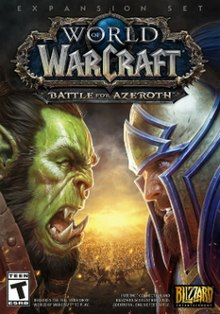
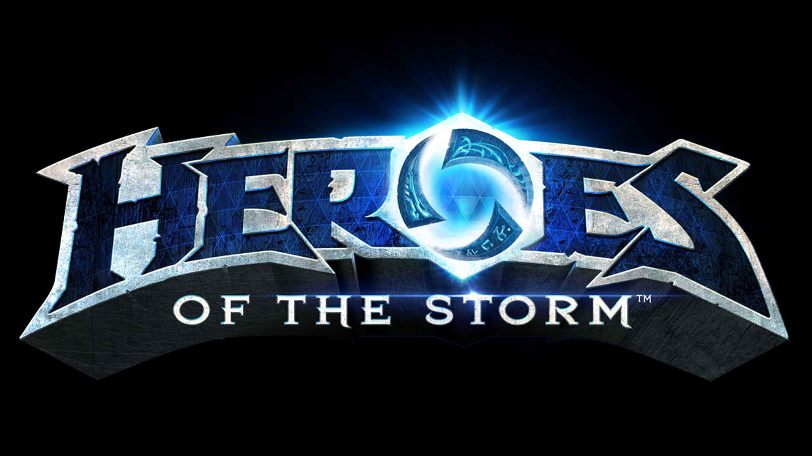
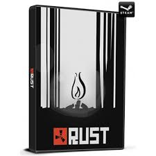
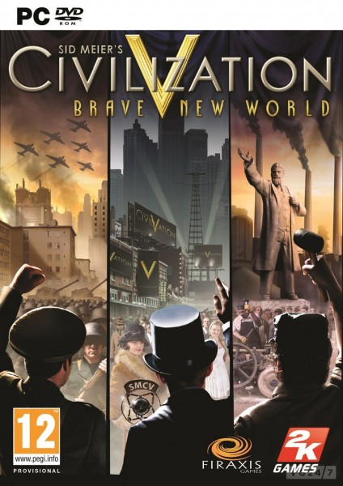
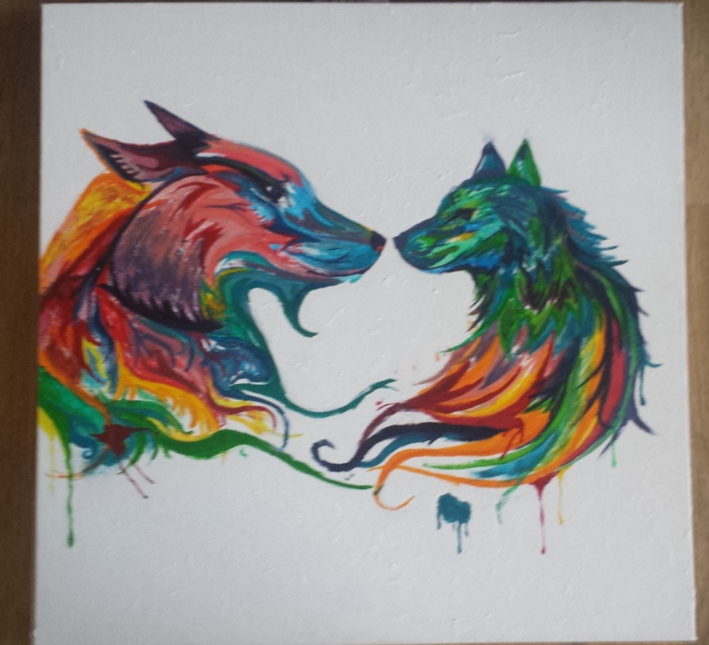
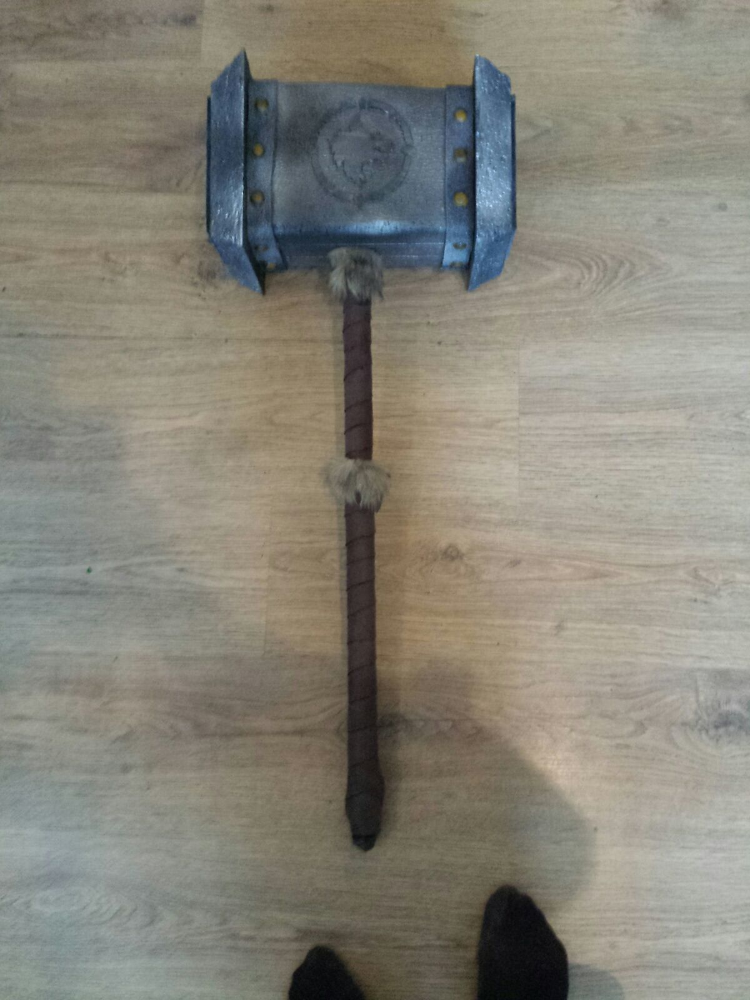
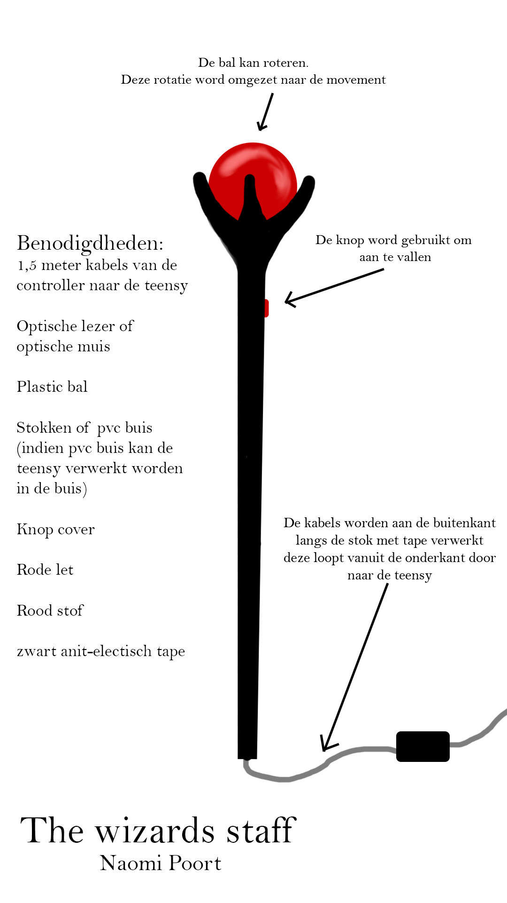
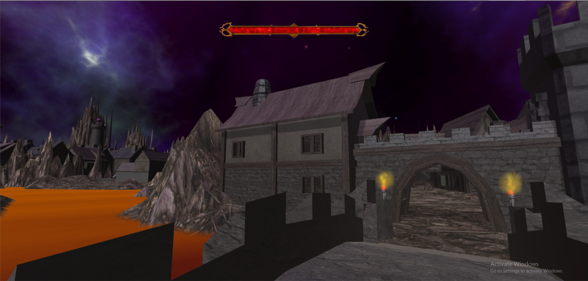

Here you wil find all my hobbies that I like to do during my spare time.
My biggest hobby is gaming. I play many different games, but the game I play most is currently World of Warcraft. Most of the games I play are multiplayer games to be able to play with friends. The genre's I mostly play are MOBA's, MMO, Survival and RTS. I love gaming because of the stories the games tell and the competitiveness between players.
|  | World of Warcraft is the biggest MMO currently out there. The game fully story driven and is enjoyable with friends. The game plays in the world of Azeroth where the player can create his own character and discover the world around. In the game the player will resolve problems around the world and save it. |
|---|---|
Heroes of the Storm is a MOBA game which means it is played in team of 5. The teams face off against each other in an arena like battleground. The goal of the game is to destroy the enemy base. In the game there are multiple ways to win depending on the heroes and the battleground the teams are playing. Since Heroes of the Storm is an Esports this game is very competitive in all levels of play. |
 |
|  | Rust is a multiplayer survival game. The game is best described as nerve wrecking to play. Every second you are in danger, like other players that want to steal your stuff. Everything in the game wants to kill you. This is possibly the hardest multiplayer game I have ever played and is not recommended for everyone. The game is very frustrating and yet very rewarding. |
Civilization V is a Turn-based Strategy game. If I had to describe it, it would be a mixture of Risk and Colonist of Catan the boardgames on steroids. One game with friends lasts for at least twenty hours to complete. The game is slow paced and very relaxing to play. |
 |
My second favorite activity is beeing creative. I love creating things with all kinds of materials. I paint, draw, craft weapons from foam and I am going to start making my own cosplay armoursets.
|  | Painting and drawing are one of my favourite activities to do in my free time. I mostly prefer classic art over digital art as you can see om my Artstation. |
|---|---|
Making foam weapons and armour sets of game characters is another hobby I keep myself occupied with. You can see the first foam weapon I made here, It is called Doomhammer from the game World of Warcraft. The hammer is wielded by a favourite character and that is why I created it. |
 |
Programming is also a hobby of mine. I start projects in my spare time and projects assignments I get. I like making my own product that I can use or learn from in the prosses of making them.
|  | As my first project with Teensy I made a game controller and a game to go with it. I made the controller at home in about 3 weeks. the game I worked on a bit longer about ten weeks. To the left you can see the design I made for my controller, here you can find the photo's of the controller. The game is a god-like game. In the game you are a magician that wants to obtain a magic book that is guarded by the armies of heaven. The player controls a daemon that moves on command of the staff. |
|---|---|
Games is what I studied to make and I still very much enjoy making them. On my GameJolt and GitHub you can find most of the projects I have worked on. Not all the projects are on these pages, because I have worked on confidential projects for the DUO (Dienst uitvoerend onderwijs) and Vesc. For these projects you can contact me for a demo. Also for some projects I do not own the rights. |
 |